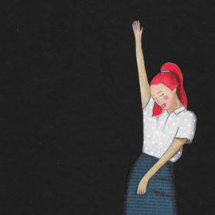

<!DOCTYPE html>
<html lang="en">
  <head>
    <title>Kim Illustrated This</title>
    <meta name="viewport" content="width=device-width, initial-scale=1">
    <meta charset="utf-8">
    <link rel="stylesheet" href="style.css">
    <link rel="stylesheet" href="https://maxcdn.bootstrapcdn.com/bootstrap/3.4.1/css/bootstrap.min.css">
    <script src="https://ajax.googleapis.com/ajax/libs/jquery/3.5.1/jquery.min.js"></script>
    <script src="https://maxcdn.bootstrapcdn.com/bootstrap/3.4.1/js/bootstrap.min.js"></script>
  </head>
</html>

<body>

<div class="container-fluid" style="background-color:#EBE5E0; color:#AF9685">
	<div class="container">
		<nav class="navbar navbar-default" style="margin: 2em">
		  <div class="container-fluid">
			<div class="navbar-header">
			  <button type="button" class="navbar-toggle" data-toggle="collapse" data-target="#myNavbar">
				<span class="icon-bar"></span>
				<span class="icon-bar"></span>
				<span class="icon-bar"></span>
			  </button>
			</div>
			<div class="collapse navbar-collapse" id="myNavbar" align="center">
			  <ul class="nav navbar-nav navbar-left">
				<li><a href="home.html">Home</a></li>
				<li><a href="home.html">Gallery</a></li>
				<li><a href="#">Contact</a></li>
			  </ul>
			</div>
		  </div>
		</nav>		
	</div>
	<h1 class="text-center" style="margin-bottom: 1em; font-size: 5em;">Kim Illustrated This</h1>
</div>

<div class="container-fluid" style="background-color:#F2F2F2; color:#AF9685">
	<div class="container">
		<div class="row vcenter" style="padding-top:2em; padding-bottom:2em">
			<div class="col-sm-5" align="center">
				
			</div>
			<div class="col-sm-7">
				<h1 style="font-size:3em">Kim Benson</h1>
				<h3>Silent knife, unholy knife A bridge of cracks click as I twist my spine I turn to find a visitor Rapture me, my Lolita And I know she knows that I killed my love Administer the lethal dose (She's as white as a ghost) The aching feels like she's gorgeous from coast to coast The scalpel bleach, make that a smile Stay with me, my darling, for my last little while And she cranes to me, "I'll be there as you sing Yet I'll be gone before the second 'kiss me'."</h3>
			</div>
		</div>
	</div>
</div>

<div class="container-fluid" style="background-color:#EBE5E0">
	<div align="center">
		
		
		
	</div>
</div>
<div class="container-fluid" style="background-color:#F2F2F2; color:#AF9685">
	<p style="padding-top:3em; padding-bottom:2em;" align="center">"Kiss me, down by the boat or the bearded barley Nightly beside the green, green grass Swing, swing, swing the spinning step You wear those shoes and I'll wear that dress Oh, kiss me." Oh Oh, three Oh, fifty-three</p>
</div>

</body>
</html>
